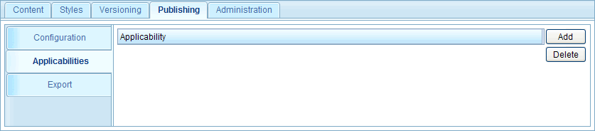
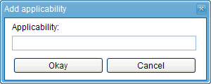
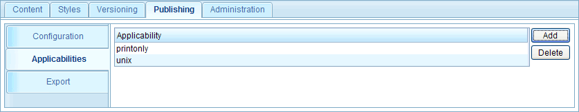
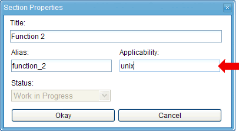
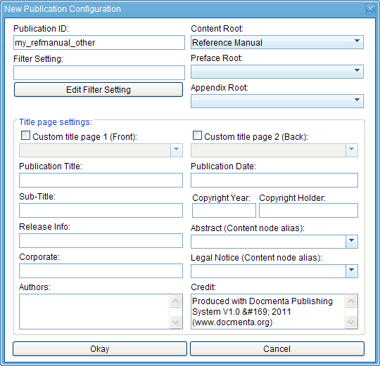
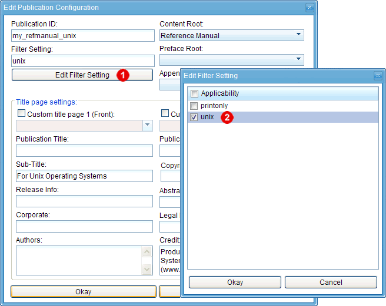
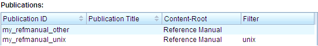
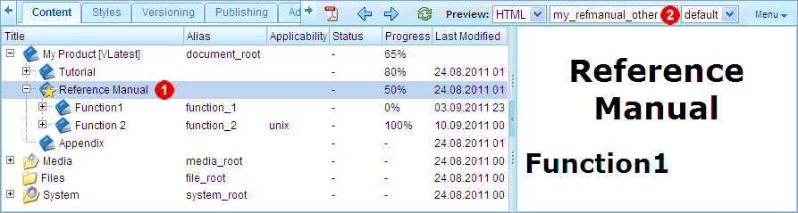
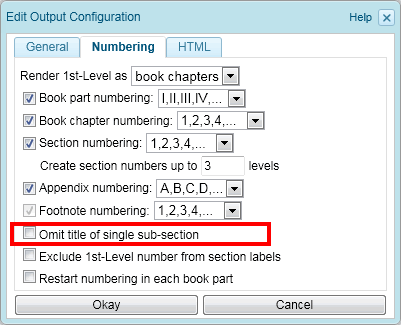

1.10.1. Node filtering
Docmenta allows you to filter the content based on applicability expressions that are assigned to nodes. The applicability expressions are evaluated based on applicability flags which are set in the publication- and output-configuration. Depending on which flags are turned on and off, different nodes within the product-tree may be excluded from the exported publication.
Before you can apply applicability filtering, you have to declare the applicability flags that shall be available for a product. In our example, we'll declare two applicability flags: "unix" and "printonly". To do this, switch to the "Applicabilities" tab of the "Publishing" workspace:

Figure 1.10.1. List of declared applicability flags
Until now, the list of applicability flags is still empty. To declare a new flag, click the "Add" button next to the list. This will open the following dialog:

Figure 1.10.2. Adding an applicability flag
Enter the name "unix" and click the "Okay" button. Repeat the steps to create the "printonly" flag:

The flag "unix" could be used to mark nodes which contain information that is specific for the Unix operating system. The "printonly" flag could be used to mark content which is intended for print-output only (i.e. PDF).
To apply the flags to some content, switch to the "Content" workspace and select the section "Function 2". Open the context menu for the selected node and choose "Edit Properties". In the "Applicability" field enter the expression "unix":

Figure 1.10.3. Assigning an applicability expression to a node
Click the "Okay" button to close the dialog.
Until now, we have declared the applicability flags and assigned an applicability expression to a node. The third step is to turn on the desired applicability flags for the filtered publications to be exported. In our example, we'll create two publication configurations for the "Reference Manual" publication: one publication shall be tailored for the Unix operating system and the second publication shall contain the information for all other (non-Unix) operating systems.
To do this, switch to the "Publishing" workspace and open the "Configuration" tab. The "Publications" list contains the previously created publication configuration "my_tutorial". Click the "New" button next to the list, to add a new publication configuration. Enter "my_refmanual_other" in the publication ID field and select the "Reference Manual" section as content root (see following screenshot):

Figure 1.10.4. Example: creating a new publication configuration
Click the "Okay" button to create the publication configuration. This is the configuration for the non-Unix operating systems.
Next we create the Unix-specific publication configuration. To simplify the work we'll create a new publication configuration by copying the "my_refmanual_other" configuration. To do this, select the "my_refmanual_other" entry from the list and click the "Copy" button next to the list. This will open the publication configuration dialog with all fields pre-filled with the values from the selected configuration, except the publication ID field which is left empty.
Enter the value "my_refmanual_unix" in the publication ID field and the text "For Unix Operating Systems" in the sub-title field (as shown in the screenshot below). Now, click the "Edit Filter Setting" button  and check the "unix" applicability flag in the opened dialog
and check the "unix" applicability flag in the opened dialog  :
:

Figure 1.10.5. Editing the filter setting of a publication configuration
Click the "Okay" button in both dialogs to create the new publication configuration.
To summarize: we have created two publication configurations for the reference manual section: one with no filter setting and one with filter setting "unix":

Figure 1.10.6. Example: 2 configurations for the "Reference Manual" publication
Now that the publication configurations exist, switch back to the "Content" workspace to preview the publications. In the "Content" workspace select the reference manual section and choose "my_refmanual_other" from the publication-preview listbox :

Figure 1.10.7. Previewing the filtered publication
As you can see in the preview area, only the section "Function 1" is displayed, whereas the section "Function 2" is filtered out. The reason for this is, that the selected publication configuration ("my_refmanual_other") has no applicability flag set in the filter setting, i.e. the applicability expression "unix" which is assigned to the "Function 2" node evaluates to false. The node "Function 1" is included, because it has no applicability expression assigned. A non-existing applicability expression always evaluates to true.
On the other hand, if you select the publication configuration "my_refmanual_unix" from the "preview publication" listbox, then both sections "Function 1" and "Function 2" are included. The node "Function 1" is included again because it has no applicability expression assigned. The node "Function 2" is included because the publication configuration has set the applicability flag "unix", i.e. the assigned expression "unix" evaluates to true.
If you do not want the node "Function 1" to be included in the "my_refmanual_unix" publication, then you have to assign the applicability expression "-unix" to this node (i.e. the node will only be included if the applicability flag "unix" is not set). In Docmenta the unary operator "-" has the meaning of the boolean operation "not".
Following table lists all operators that can be used within applicability expressions:
| Operator | Description |
|---|---|
| , | and |
| | | or |
| - | not |
In addition you can use round brackets "(" and ")" to group sub-expressions.
Examples:
| Expression | Description |
|---|---|
| print,unix | The node will be included if the applicability flags "print" and "unix" are set. |
| linux | unix | The node will be included if the "linux" or the "unix" flag is set. |
| (linux | unix),-print | The node will be included if the "print" flag is not set and the "linux" or the "unix" flag is set. |
Note:
In the filtering example above, the sub-section "Function 2" is filtered out and therefore the parent section contains only a single sub-section "Function 1". Normally it does not make sense to display the title of a single sub-section. Therefore, the output-configuration provides an option to omit single sub-section titles for exported publications:

Figure 1.10.8. Output option: Omit title of single sub-section